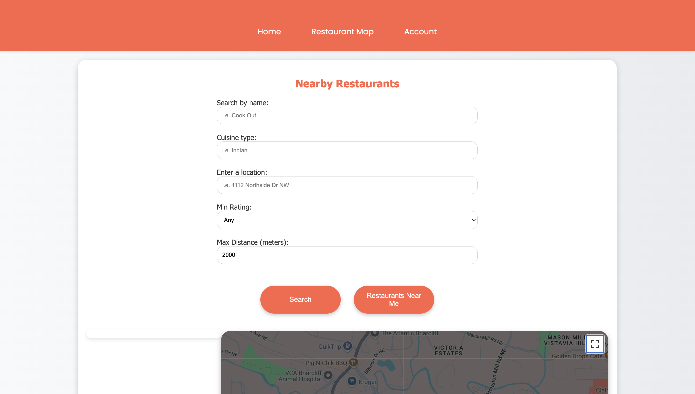

DIY Spotify Car Thing
Inspired by the Spotify Car Thing, I engineered a compact desk gadget that seamlessly connects to your Spotify account. It features a vibrant LCD display showcasing current song cover art and intuitive haptic buttons for controlling playback – allowing you to rewind, play/pause, skip tracks, and like songs with ease.
Technologies Used

MBed Wordle Game
A simple hardware implementation of a Wordle game written in C++, that features an LCD to display animations and game progress, a NAV switch to select letters, mini buttons for game control, and LED indicators for feedback. This project demonstrates embedded systems programming and user interface design in a constrained hardware environment.
Technologies Used

Atlanta Food Finder
A comprehensive web application that helps users discover and explore restaurants in Atlanta. Features include interactive maps, detailed restaurant information, user reviews, and advanced filtering options. Built with modern web technologies for a seamless user experience.
Technologies Used
